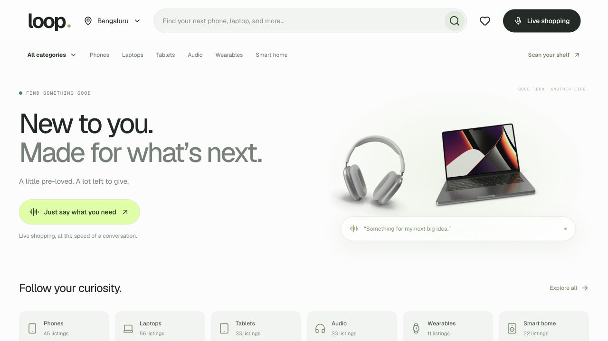

Case studies
Commerce concepts
and working demos.
Three experiments in how people find products, decide what to buy, and list what they already own.

01 / Commerce / Live concept
A voice-first ecommerce discovery experience.
Search for electronics by voice, ask about individual products, and compare the options as your requirements become clearer.
wardrobe worth?”“Sell the first and third.”02 / Recommerce / Live concept
“What’s my wardrobe worth?”
What if we knew what customers already had at home? Reflections from eBay on supply, the cost of cataloging, and how AI can take the effort out of selling.
the product.“What do people say about the fabric?”03 / Commerce / Voice-first interface
Search, product details and reviews, shown when you ask.
The usual product page puts everything in one place. This demo shows the product first, then reviews, attributes or comparisons in response to your questions.